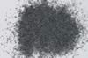

|
|
(For further information on spectroscopy, see:
http://speclab.cr.usgs.gov)
TITLE: Glaucophane HS426 DESCRIPT
DOCUMENTATION_FORMAT: MINERAL
SAMPLE_ID: HS426
MINERAL_TYPE: Inosilicate
MINERAL: Glaucophane (Amphibole group)
FORMULA: Na2(Mg,Fe+2)3Al2Si8O22(OH)2
FORMULA_HTML: Na2(Mg,Fe+2)3Al2Si8O22(OH)2
COLLECTION_LOCALITY: California
ORIGINAL_DONOR: Hunt and Salisbury Collection
CURRENT_SAMPLE_LOCATION: USGS Denver Spectroscopy Laboratory
ULTIMATE_SAMPLE_LOCATION: USGS Denver Spectroscopy Laboratory
SAMPLE_DESCRIPTION:
Forms series with Ferroglaucophane.
Original spectrum published in: Hunt, G.R., J.W. Salisbury, and C.J. Lenhoff, 1973, Visible and near-infrared spectra of minerals and rocks: VI. Additional silicates. Modern Geology, v. 4, p. 85-106.
With the comment:"The iron-free end member is very rare, and in most glaucophane there is some replacement of Mg by Fe2+ and of Al by Fe3+. Such substitution results in the broad absorption from 0.6 to 1.0µm. The 1.4µm hydroxyl band is quite evident, and the 2.32µm feature is the best resolved band in the spectrum. The 1.9µm band indicates that a little included water is present."
IMAGE_OF_SAMPLE:

END_SAMPLE_DESCRIPTION.
XRD_ANALYSIS:
Analysis by Norma Vergo indicates glaucophane + chlorite + others.
END_XRD_ANALYSIS.
COMPOSITIONAL_ANALYSIS_TYPE: None # XRF, EM(WDS), ICP(Trace), WChem
COMPOSITION_TRACE: None
COMPOSITION_DISCUSSION:
None.
END_COMPOSITION_DISCUSSION.
MICROSCOPIC_EXAMINATION:
Mineral Mode:
60 vol% glaucophane
25 vol% chlorite
12 vol% qtz or feldspar
3 vol% muscovite
average grain size of glauconite only = 284 µm
Glaucophane has light blue-purple pleochroism, amphibole cleavage, length slow, biaxial (-), small Z angle C, all consistent with glaucophane. I suggest cleaning up 4B and crushing hand picked grains. G. Swayze.
END_MICROSCOPIC_EXAMINATION.
SPECTROSCOPIC_DISCUSSION:
END_SPECTROSCOPIC_DISCUSSION.
SPECTRAL_PURITY: 1c2c3c4c # 1= 0.2-3, 2= 1.5-6, 3= 6-25, 4= 20-150 microns
| LIB_SPECTRA_HED: | where | Wave Range | Av_Rs_Pwr | Comment |
|---|---|---|---|---|
| LIB_SPECTRA: | splib04a r 1771 | 0.2-3.0µm | 200 | g.s.= 284 µm |
| LIB_SPECTRA: | splib05a r 2828 | 0.2-3.0µm | 200 | g.s.= |
| LIB_SPECTRA: | splib06a r 8178 | g.s.= | ||
| LIB_SPECTRA: | splib06a r 8190 | g.s.= |
{kind=link}